録画テープ（2026年8月、実家）
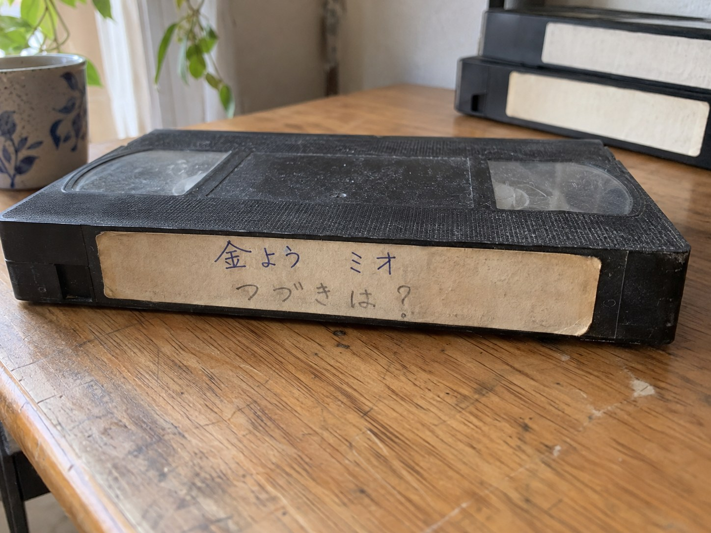
3倍で録ったテープで、頭に、ある週のオープニングが残っていました。後ろのほうに、最後の回の終わりの数分があります。その先は砂嵐でした。
オープニング
最後の回（第13話）の終わり 〜 次回予告 〜 提供
エンディングと、そのあとのコーナーは、長いので切ってあります。予告のあとの提供の画面で、録画は終わっています。
※ 架空のアニメを「発掘」する体裁のフィクションです。このサイトについて
1996年の秋、金曜の夕方に見ていたアニメです。年末に「つづく」と出て終わり、年が明けたら、始まりませんでした。
実家の片付けで録画したテープが出てきたので、分かったことをここにまとめています。

3倍で録ったテープで、頭に、ある週のオープニングが残っていました。後ろのほうに、最後の回の終わりの数分があります。その先は砂嵐でした。
エンディングと、そのあとのコーナーは、長いので切ってあります。予告のあとの提供の画面で、録画は終わっています。
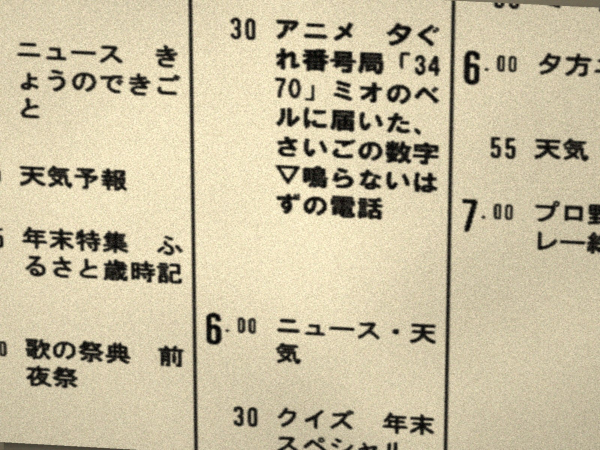
翌週の1月3日は正月の特別番組で、1月10日からは、同じ時間に別の番組の再放送が入っていました。
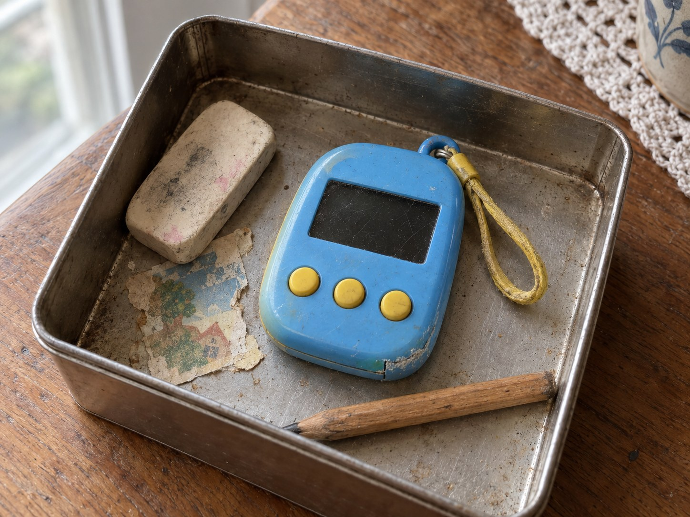
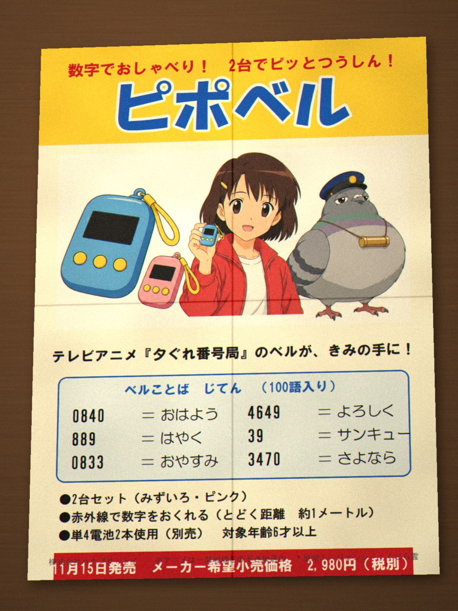
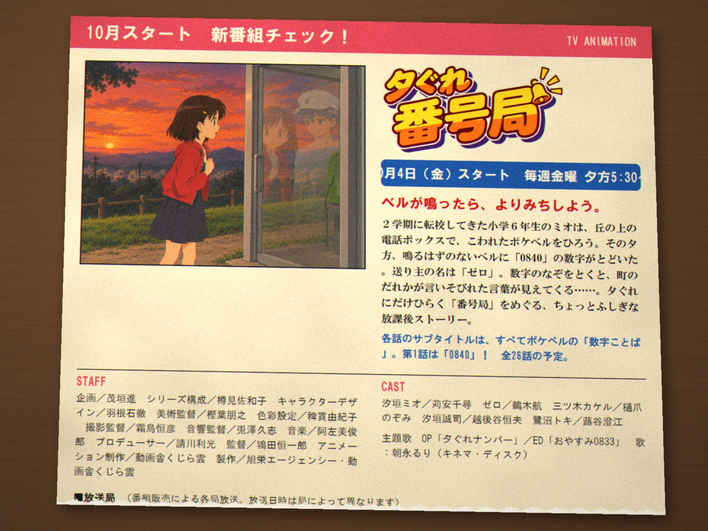
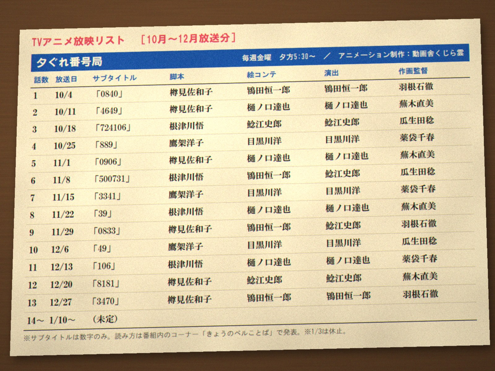
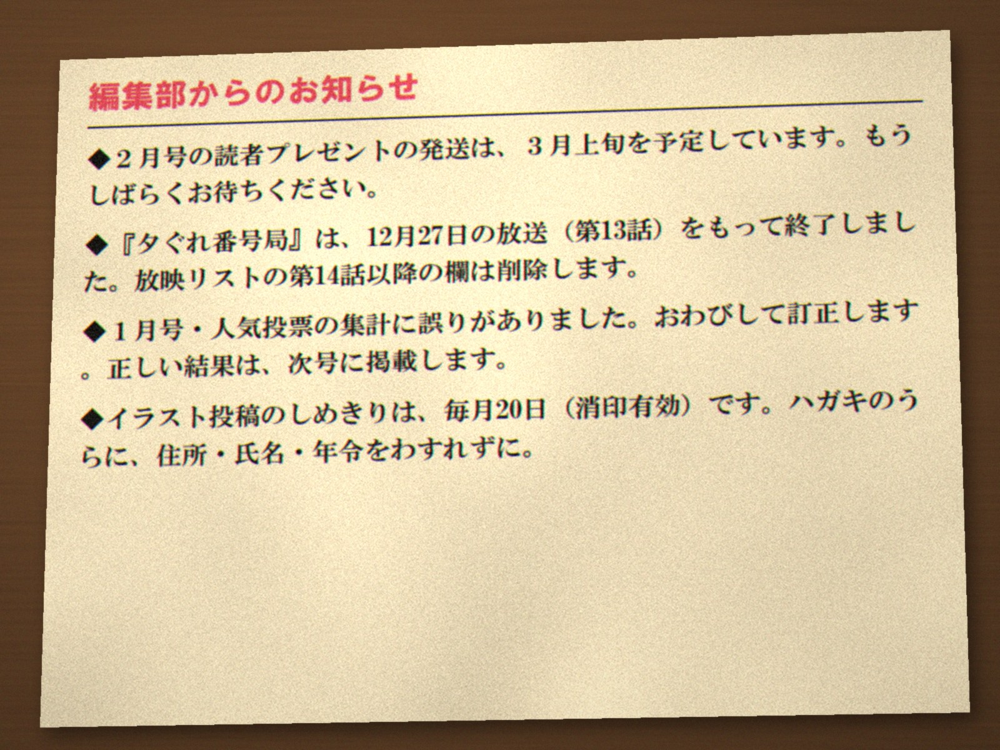
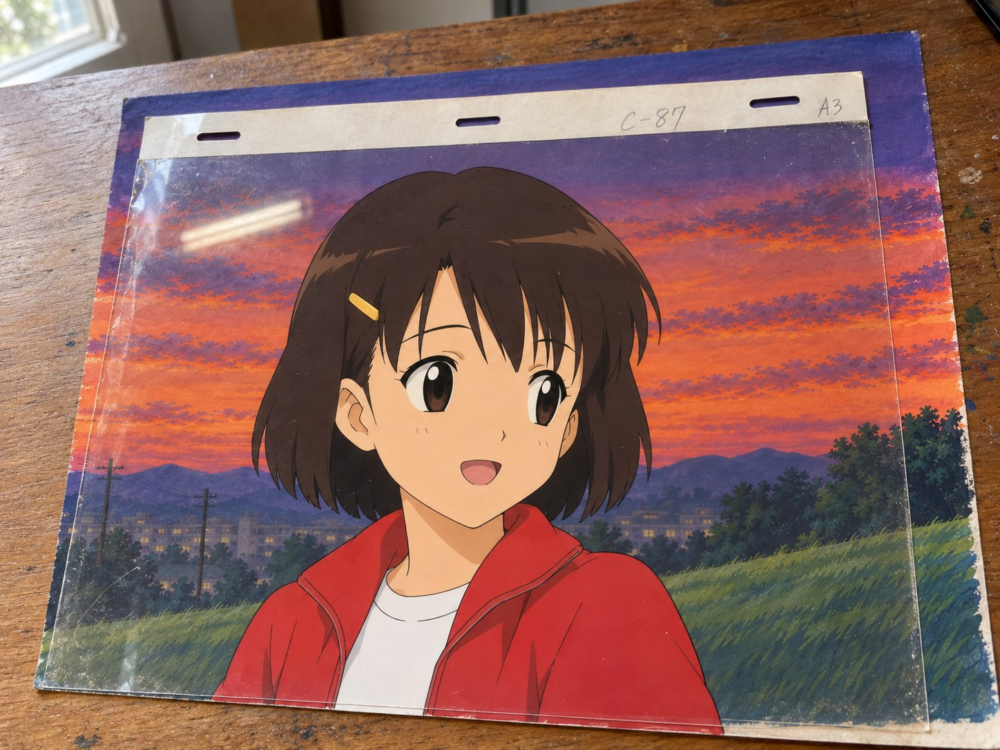
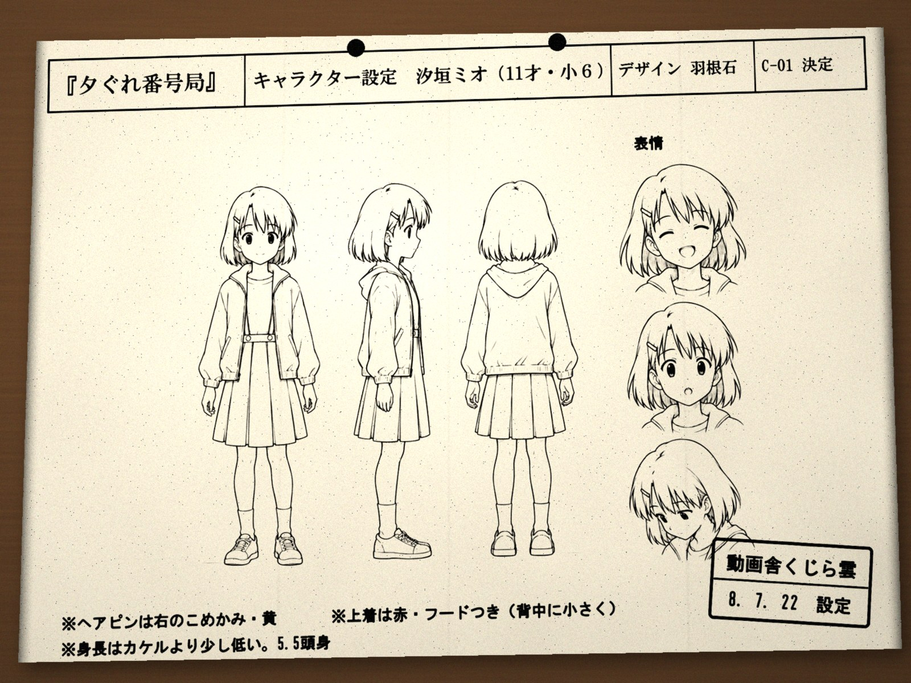
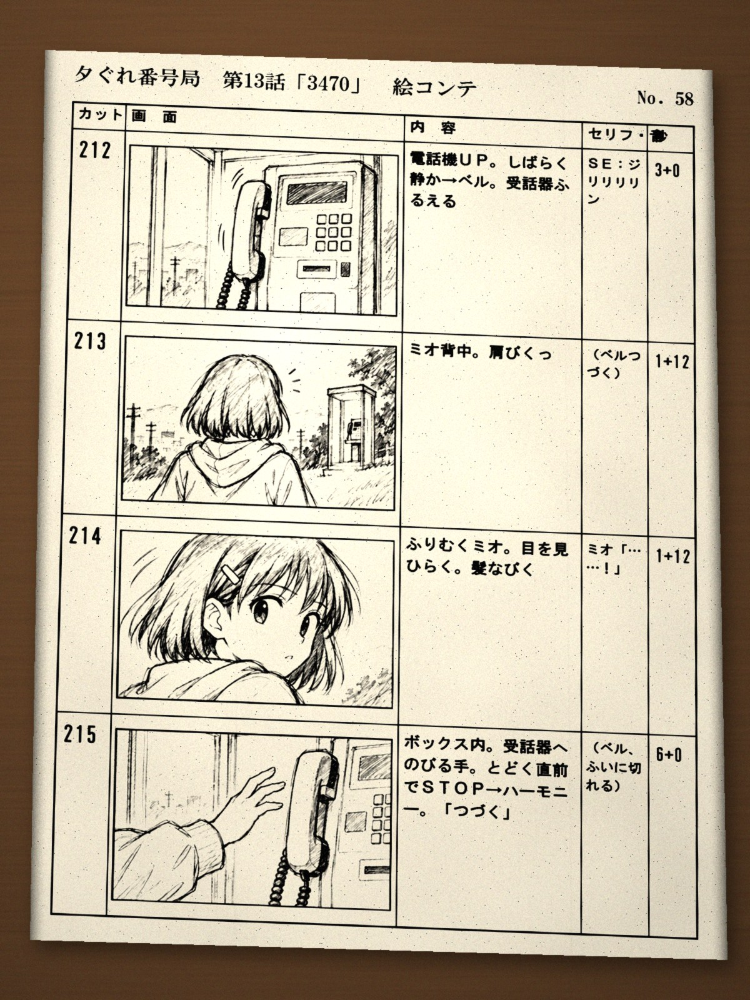
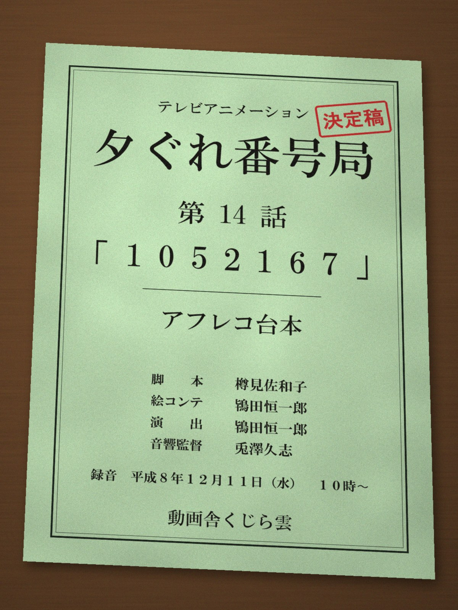
| 題名 | 夕ぐれ番号局（ゆうぐればんごうきょく） |
|---|---|
| 放送 | 1996年10月4日〜12月27日、毎週金曜の夕方5時30分（うちの地域）。全13回 |
| 予定 | 全26話。第14話は台本があり、予告も流れた |
| スタッフ | 監督 鴇田恒一郎／シリーズ構成 樽見佐和子／キャラクターデザイン 羽根石徹／音楽 阿左美俊郎／アニメーション制作 動画舎くじら雲 |
| 声 | ミオ 苅安千尋／ゼロ 鵜木航／カケル 樋爪のぞみ |
| 主題歌 | 「夕ぐれナンバー」 歌 朝永るり |
各話の題名は、全部数字でした。ポケベルの「数字ことば」だと、教えてもらいました。下の欄に数字を打つと、分かっている話のことが出ます。
各話の題名の数字を打って、「おくる」を押してください。
第14話だけ、まだ誰にも届いていません。